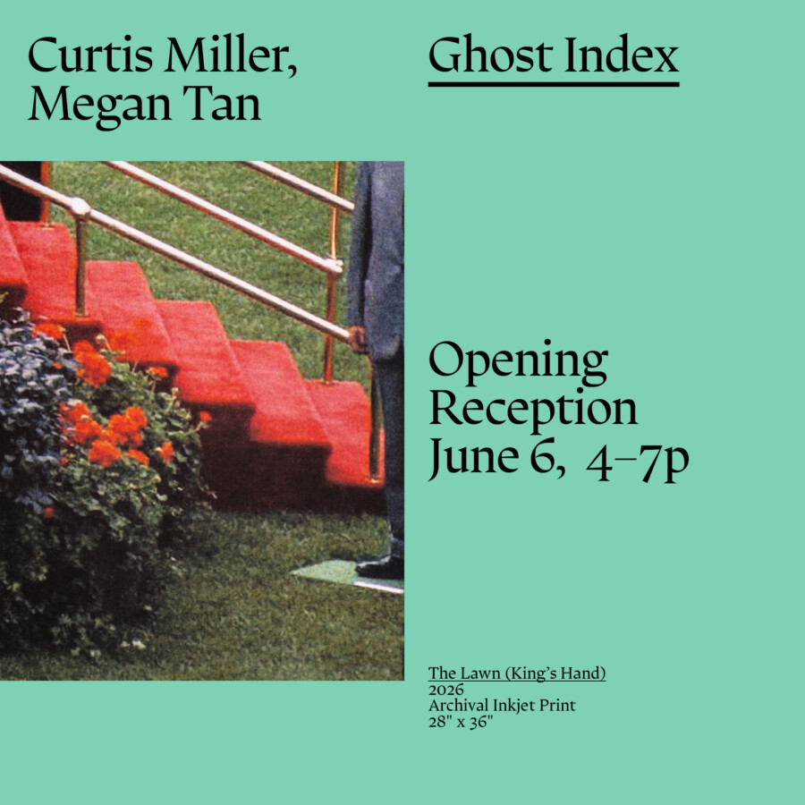

Ghost Index: Curtis Miller and Megan Tan
You look and see nothing at first, which is to say that you see what you expected. Later, someone points out a detail, “right there,” and something begins to form, or perhaps it was already there and now that there becomes available to you. In the nineteenth century, famed “spirit photographer” William Mumler made images of ghosts, most notably an image of Mary Todd Lincoln and her recently killed husband, though “made” is not quite right, since what mattered did not appear (emerge?) at the moment of exposure, only later, during development, or later still, when looking had time to adjust. Patience outstretched, contexts new but the image does not change. You do. Once an image has moved between screens enough it no longer belongs to a single moment but now lives in an act of returning to it. You look again, closer this time, enlarging, isolating, comparing. While looking at the images of Mumler you begin to suspect that what happens here happens with all images, that looking does not produce the image so much as meet it, that patience shifts scale, that time cannot be removed from perception.
Someone tells you where to look, or you tell yourself. The effort begins to carry its own weight. What is found feels less like interpretation than confirmation, as if what is discovered has been waiting there scattered and desiring. There is now more to see than can be accounted for. You gather fragments, replay them, test them against one another. You are the eye in “I am looking.” It is called attention, or sometimes research, we all do it now, don’t we? The instruction is simple: always look closer. The image holds something, or seems to, and you remain with it, trying to determine what has already, really, taken place.